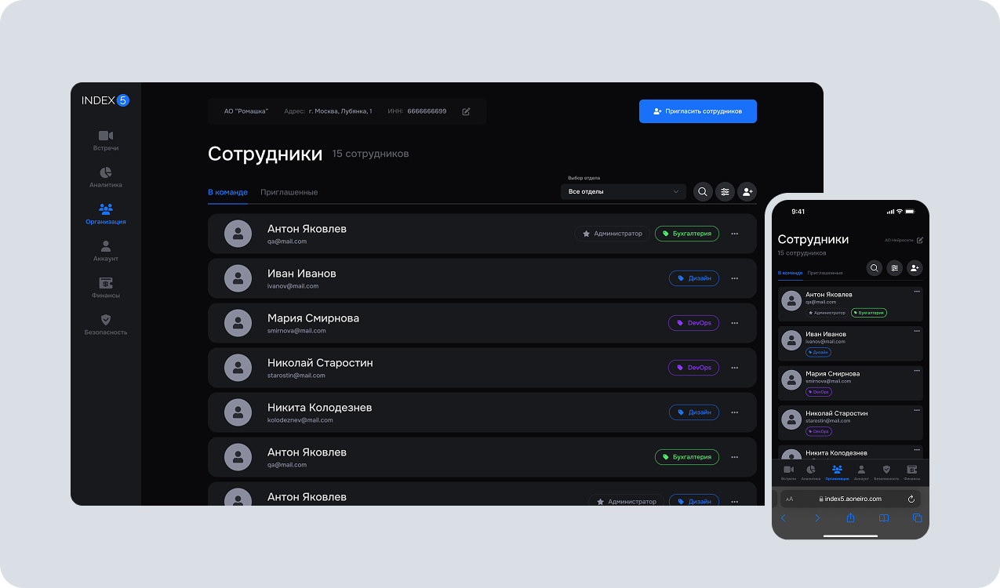
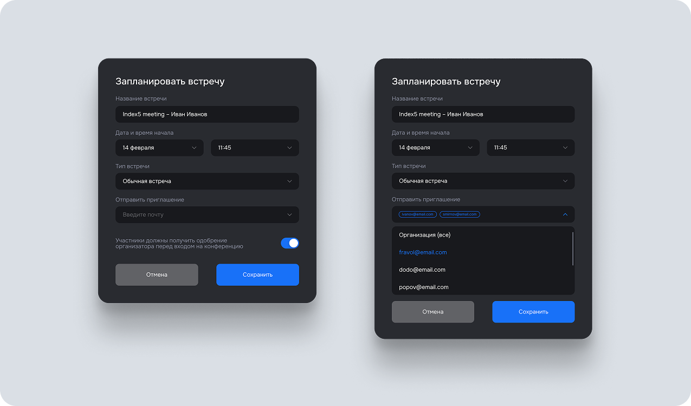
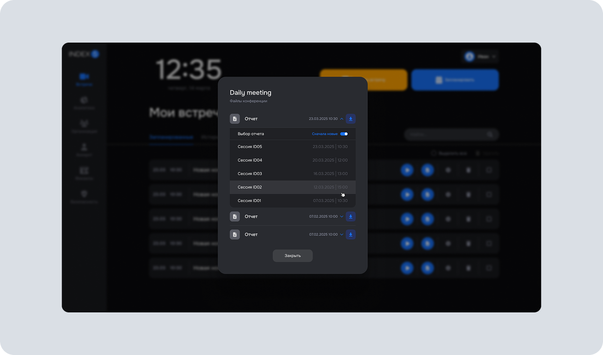

Страница организации
Ситуация
В веб-версии ВКС-платформы Index5 для бизнеса и государственных организаций требовалась страница со списком сотрудников. Пользователям и администраторам было необходимо быстро находить людей с учётом структуры компании — по группам и подразделениям.
Задача
Мне поручили спроектировать страницу организации и сценарии работы с ней для двух ролей: пользователя и администратора. Решение должно было поддерживать просмотр и фильтрацию сотрудников по структуре организации.
Процесс
Я разработал user flow для обеих ролей и согласовал сценарии с руководителем проекта и техническим директором. Затем подготовил wireframe, спроектировал недостающие UI-компоненты, собрал интерактивный прототип и защитил решение перед командой.

После согласования я подготовил финальный макет и передал его в разработку. После выхода функции в продакшн провёл дизайн-ревью и проверил соответствие реализации утверждённому решению.
Результат работ
Страница организации с фильтрацией сотрудников по группам и подразделениям была реализована и выпущена в продакшн. Пользователи и администраторы получили сценарии работы со списком сотрудников, учитывающие корпоративную структуру.
Создание конференции в закрытом контуре
Ситуация
В закрытых контурах компаний и государственных организаций администраторы не могли быстро приглашать на конференцию выбранные группы сотрудников. Существующий сценарий создания встречи не учитывал структуру компании, министерства или отдельного подразделения.
Задача
Мне предстояло улучшить сценарий создания конференции и перенести согласованное техническое решение в интерфейс, чтобы администратор мог выбирать и приглашать нужные группы внутри закрытого контура.
Процесс
На основе утверждённого user flow я разработал wireframe и защитил предложенный сценарий. После согласования собрал референсы для новых элементов интерфейса, спроектировал компоненты и добавил их в общую дизайн-систему продукта.

Я подготовил финальный прототип, представил его руководителю проекта и техническому директору и передал макеты в разработку. После релиза провёл дизайн-ревью.
Результат работ
Обновлённый сценарий создания конференции был реализован и выпущен в прод. Администраторы получили возможность выбирать и приглашать группы сотрудников в соответствии со структурой организации.
Структурный отчёт по сессиям
Ситуация
Заказчикам платформы требовался единый структурированный summary-отчёт по одной или нескольким сессиям внутри конференции, а также возможность скачать полный список. Готового сценария и подходящего способа визуализации в продукте не было.
Задача
Мне предстояло улучшить сценарий создания конференции и перенести согласованное техническое решение в интерфейс, чтобы администратор мог выбирать и приглашать нужные группы внутри закрытого контура.
Процесс
Я уточнил у руководителя проекта user flow и технические возможности платформы, после чего разработал wireframe. На его основе собрал прототип из компонентов дизайн-системы и подготовил несколько вариантов визуализации отчёта.

Варианты были проверены с помощью A/B-тестирования на представителях двух компаний, которые выступали прямыми заказчиками функции. Полученная обратная связь использовалась для выбора наиболее удобного решения.
Результат работ
Команда получила проверенный на целевых клиентах пользовательский сценарий и прототип функции структурированных отчётов. Выбор визуализации был основан на обратной связи прямых заказчиков, а не только на внутренней оценке команды.